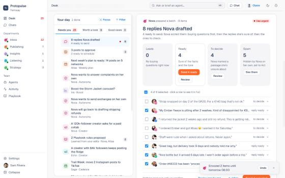
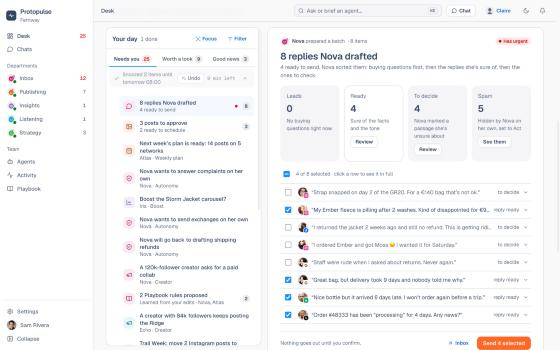
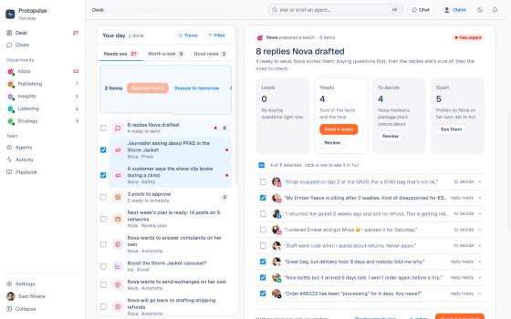

Three pattern changes to validate
UI quality pass, before pass 3. Passes 1 and 2 (tokens, primitives, screens on the canonical variants) are done on the branch. These three change what you see, not just how clean it is, so they wait for your OK. The "after" renders are the real app with the change mocked in the page.
1. No more toasts: one undo line where the action happened
Today 35 actions confirm in a toast bottom right (4 to 6 s); the Desk group actions keep their only Undo there. Proposal: the shared UndoBar (already used by the 7 existing undo bars since pass 2) appears at the top of the list you acted on, with the time left, and stays until it expires or you dismiss it.


Where each of the 35 goes:
| Action | Inline home |
|---|---|
| Desk group actions (approve, snooze, Ask Claire, reject) | UndoBar at the top of Your day |
| Publishing: post saved / scheduled from the composer, post deleted, slot found for a handed-over post | UndoBar above the calendar (same place as the bulk undo) |
| Listening: competitor added, replies or posts drafted from mentions | UndoBar at the top of the tab, with "Review on Desk" |
| Autonomy moved to Act (cards leave the Desk) | UndoBar above the autonomy board |
| Report shared with Claire | The button becomes "Shared with Claire · 10:12" |
| Desk decisions (autonomy approved, rule added), reply sent, sent to Claire, undo of an auto-reply | Already stamped on the card / shown in the thread: toast just removed |
| Rule already in the Playbook | Hint under the "Add a rule" field |
| Background work (Claire's verdict, trial week over, plan v2 ready, new card on the Desk) | Arrives silently in the list and the journal (PROMPT §5) |
Then Toasts, pushToast, core/toast and the Settings line about toasts are deleted.
2. Batch card: one primary, one Review per lane
A batch shows "Send 4 ready" in the Ready lane and "Send 4 selected" in the footer (same items: ready ones start selected), plus "Review" per lane and "Review one by one". Proposal from the UX audit: keep the footer primary and the lane "Review" only.

3. A one-click dismissal can be taken back
Dismissing a trend ("Not for us"), a lesson or a counter-move, or declining a Sage adjustment, replaces the buttons with a pill for good. Proposal: one wording, "Dismissed" (or "Declined" for Sage), followed by an Undo link that restores the buttons.